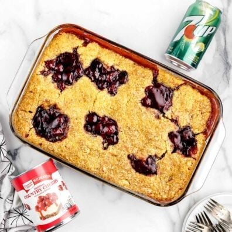

7UP CHERRY COBBLER

This is the easiest 3-ingredient 7UP Cherry Cobbler
you will ever make! Serve with a scoop of ice cream
for a delicious dessert.
- 63 ounces (3 21-ounce) cans of cherry pie filling
- 15.25 ounces box of yellow cake mix
- 2¼ cups (20 ounces) 7UP lemon-lime soda
- 1½-2 tablespoons salted butter
- Vanilla ice cream
- Preheat the oven to 350°F. Generously spray a 9×13
baking dish with baker’s spray (Baker’s Joy or generic version).
- Evenly spread 2 cans of cherry pie filling in the bottom
of the prepared baking dish.
- Evenly sprinkle the dry yellow cake mix over the cherry pie filling.
- Slowly pour the 7UP over the cake mix layer.
(It will be foamy) Use a spoon to gently smooth the very top layer
of the cake mix and 7UP. You only want to smooth, not stir, the top layer.
- Spoon 5-6 dollops of the remaining cherry pie filling. (Before baking,
the cobbler will appear very wet. That is why the baking time is a bit long,
but it is needed) Bake for 1 hour to 1 hour 10 minutes (Every oven bakes
differently, just be sure to keep a close eye on your cobbler,
maybe checking around 55 minutes. In my oven, 1 hour 5 minutes was
the perfect bake time) until the cake is golden brown.
- Remove from the oven and use a pastry brush to brush the melted butter
over the exposed cake, if desired. Allow the cake to cool completely before
serving with vanilla ice cream. (The longer the cobbler sits and cools will
firm up the cobbler. It will take a while to cool completely.)